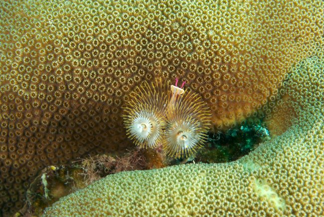

Bonaire May 2007
Index
Previous
2 of 52
Next
Rating: 3
Badges: Adjusted Keyword
Aperture: f/11
Shutter Speed: 1/100
Exposure Bias: 0ev
Focal Length (35mm): 90mm
Focal Length: 60mm
Caption: Christmas Tree Worm
Keywords: Bonaire, Diving, Underwater Photography
Name: Bonaire 2007-05-06 14-59-56
Image Date: 5/6/07 2:59:53 PM GMT+05:00
ISO Speed Rating: ISO200
File Size: 15.96 MB
Master Location: Bonaire 2007-05
